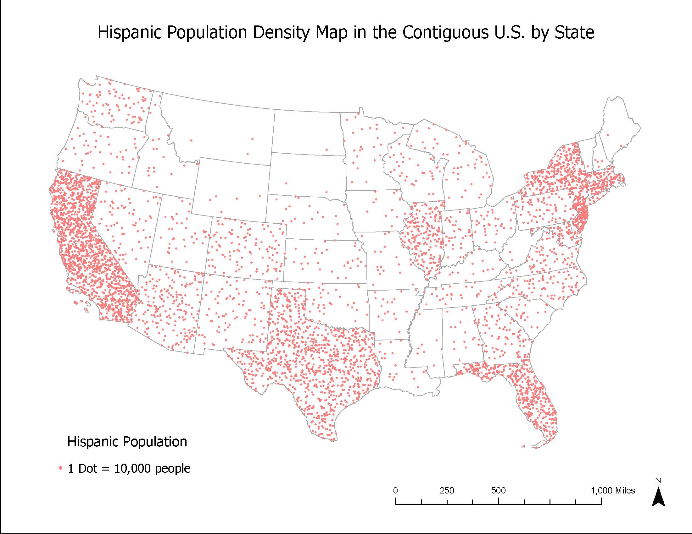

Hispanic Population in the Contiguous U.S.

Analysis
This analysis examines the spatial distribution of the Hispanic population across the contiguous United States using data from the U.S. Census Bureau. The primary objective was to visualize demographic concentrations through a Dot Density Map, where each dot represents 10,000 individuals. By utilizing the NAD 1983 Contiguous USA Albers projection, I ensured that the map preserves true geographic area—a critical requirement for dot density mapping, as distortions in area would lead to inaccurate perceptions of population density.
Through this study, I gained a deeper understanding of how data normalization and proper symbology selection transform raw census figures into meaningful spatial patterns. The resulting map reveals significant regional disparities in Hispanic population distribution, highlighting clear clusters that standard tabular data fails to convey. However, this visualization also underscores the inherent limitations of census-based research: reliance on periodic surveying can lead to under-counts in remote areas, and the use of fixed administrative categories can mask the complexities of multi-ethnic identities. Ultimately, this lab demonstrates that effective spatial analysis requires not only technical proficiency in data processing but also a critical awareness of the social and structural factors that shape demographic data.
GIS Skills & Workflow
- Data Retrieval & Projections: Retrieved spatial data from the U.S Census Bureau and applied the NAD 1983 Contiguous USA Albers projected coordinate system to preserve area accuracy.
- Data Querying: Sorted data descending (`ALAND10`) and utilized "Select by Attributes" to filter states where the Hispanic population (`DP010002`) was greater than the total population of the least populous state (`> 563626`).
- Dot Density Symbology: Applied primary symbology to field `DP010002`, setting 1 dot equal to 10,000 people to visualize population quantity and area distribution.
- Cartographic Design: Finalized the map layout by inserting essential elements including a legend, scale, title, and north arrow.
High-Risk Areas for Water Toxicity in Flint, Michigan

Analysis & Methodology
This environmental justice analysis identifies high-risk areas for water toxicity within the ward boundaries of Flint, Michigan. By overlaying critical infrastructure data, this map highlights zones facing compounding environmental hazards. The spatial layout details the intersection of lead service lines, high-risk exposure areas, and high-pollution facilities generating over 10,000 tons of pollutants near the Michigan river lines.
GIS Skills & Workflow
- Projections & Data Integration: Projected spatial data to NAD 1983 HARN StatePlane Michigan South and performed table joins to connect Michigan TRI Facilities with tabular water pollution data.
- Attribute Selection: Utilized "Select by Attributes" to isolate specific data points—such as high pollution facilities (water pollution > 10,000 tons) and designated lead service lines—and exported them as isolated layers.
- Geoprocessing Tools: Clipped river lines to ward boundaries and ran multiple Buffer tools (using the 'dissolve all' type) to map proximity risks: 0.3 miles around high pollution sites and river lines, and 0.2 miles around lead service lines.
- Spatial Intersection: Executed the Intersect tool to combine the three buffered layers, successfully pinpointing definitively overlapping high-risk exposure areas.
- Cartographic Layout: Designed a final map layout to cleanly display the resulting intersect alongside context layers (ward boundaries, clipped riverline, high pollution points, and lead lines), incorporating standard map elements including a legend, north arrow, and scale.